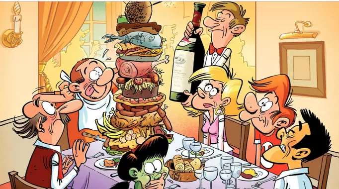

Anecdote du CCAS.
Tiphany mascotte du CCAS
Un jour, lors de la visite chez un résidant, Magalie et un
bénévole rencontrent dans la rue un attroupement et lui disent: "
Quelqu’un a jeté un chat de 4eme étage d’un immeuble mais il est impossible de l’attraper."
Magalie s’approche de l’animal et réussie à le prendre.
Elle le met dans son panier d’osier et le ramène au bureau. Elle interroge ses collègues afin de savoir si l’un ou l’une d’entre elles est intéressé pour le garder.
Elle s’approche de moi et me dit :“ Martine toi qui vient de perdre ton chat, puis-je te le confier ?"
Je lui réponds:“je
veux faire un petit break avec la garde d’un chat.“
Cependant, ce
petit chat est trop beau pour le laisser dans la nature.
J’appelle mon mari afin qu’il passe au bureau le voir. Il
arrive finalement avec le panier de transport afin de la prendre
en charge pour quelque temps. Nous l’amenons chez notre
vétérinaire afin de découvrir son identité et vérifier qu’il ne
présente pas des séquelles de sa chute. Il constate quelques
griffures sur le dos et une petite foulure à la patte mais pas de fracture. Il s’agit d’une jeune chatte un peu agressive et il nous proposa de l’emmener à la SPA.
Finalement, nous l’adoptons. C’est une
petite femelle de quelques mois. Elle est restée derrière notre
canapé pendant une semaine. Elle est devenue la mascotte du
CCAS. Et les collègues du bureau demandent régulièrement des
nouvelles du petit chat.
A la fin de l’été, nous fêtons mon départ du CCAS dans une brasserie afin de partager le dernier repas. De nos jours, cette ambiance n’est plus d’actualité malheureusement. J’effectue ainsi cette mission estivale pendant deux années jusqu'à ce que mon service au CARRE A LA FARINE passe dans les mains du service culturel en 2014.

Il est vrai que sous la direction de Mr Ab, ce n’était pas facile, Il a voulu que je fasse la formation SSIAP (La formation Service de Sécurité Incendie et d'Assistance à Personnes). J’étais prête à faire un changement de poste.